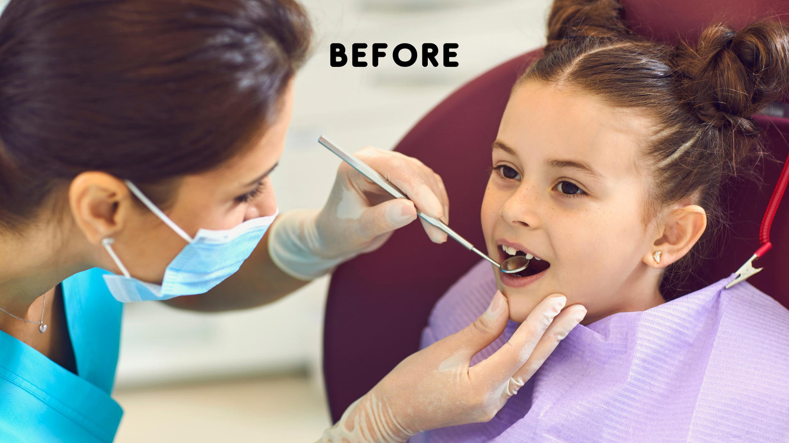
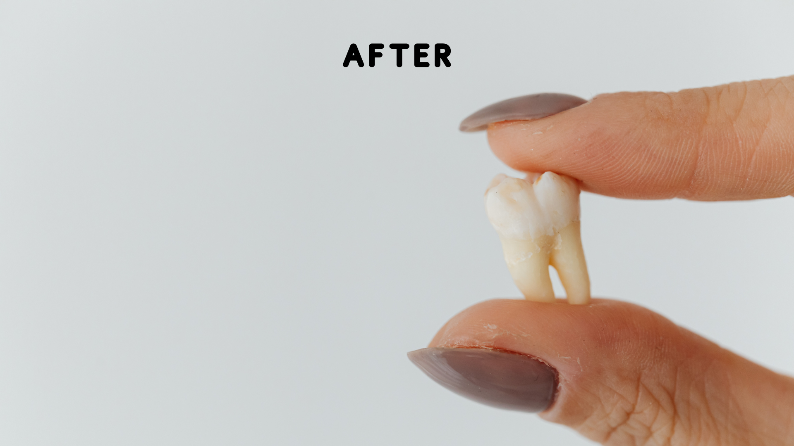

Home
About
Services
Gallery
Contact
Book Online
Ivory Dental Clinic
Gallery
Book Online
or call
(076)3686180
Before & After
(Note: Move slider to the left and right to differentiate before and after treatement)
 
footer section will be updated as the last step